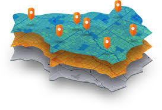
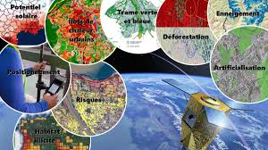
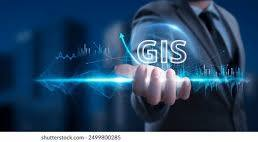
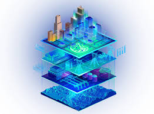
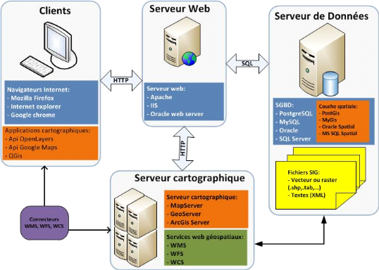

-
Analyse spatiale

L'analyse spatiale regroupe un ensemble detechniques utilisées pour
étudier la distribution des phénomènes dans l'espace.
Ces techniques incluent principalement la cartographie, la modélisation spatiale,
Systèmes d'Information Géographique, l'interpolation spatiale, et bien
d'autres.
Ma formation académique en Géographie et enGéomatique, ainsi que ma spécialisation en Télédétection et en SIG, m'ont
permis d'acquérir les compétences nécessaires pour mener à bien des projets
d'analyse spatiale complexes. Grâce à cette expertise, je suis capable de
visualiser, analyser, et interpréter des données géographiques afin de fournir
des insights précieux pour la prise de décision et la résolution de problèmes
dans divers domaines, tels que l'urbanisme, la gestion des ressources
naturelles, et la planification environnementale, agriculture etc.
-
Traitement d'images satellitaire

Le traitement d'image satellitaire est un ensemble de techniquespermettant l'analyse et l'interprétation des produits d'observation de la
Terre. Ces images, prises par les satellites, fournissent des informations
précieuses sur la surface terrestre. Ces informations sont largement utilisées
dans divers domaines tels que l'agriculture, la gestion des ressources
naturelles, l'urbanisme, et la surveillance environnementale.
- Segmentation et classification
- Analyse multi-temporelle
- Analyse spectrale
- Modélisation et prédiction
-
Cartographie et SIG

Les Systèmes d'Information Géographique (SIG)sont un ensemble d'outils permettant la collecte, le stockage, l'analyse, la
gestion et la visualisation des données géographiques. Ces aspects sont
aujourd'hui indispensables pour comprendre les phénomènes spatiaux. J'ai
beaucoup travaillé avec des données à référence spatiale en utilisant des
outils SIG tels qu'ArcGIS, QGIS et Google Earth Engine (GEE).
La visualisation des résultats sous forme decartographie statique ou interactive est très pratique pour partager les
résultats d'une étude géospatiale. Ces représentations cartographiques
facilitent la communication des analyses complexes et permettent de mieux
appréhender les informations géographiques, rendant les données plus
accessibles et compréhensibles pour un large public.
-
Gestion de Base de Données Spatiale

Les systèmes de gestion de base de données (SGBD) sont des logiciels qui permettent de créer,
gérer et manipuler des bases de données. Ils offrent un cadre pour le stockage, la récupération et la gestion des données,
en assurant leur cohérence, leur intégrité et leur sécurité
-
Géoservices Web Cartographique

Les plateformes de partage des informations géographiques entre plusieurs utilisateurs et
via le web sont très utiles et apportent des services supplémentaires aux SIG de Desktop. Grâce à l'utilisation
des GeoWeb et des services web cartographiques, des géoservices sont créés pour permettre un accès sécurisé aux
géodonnées.
-
Data Science

La science des données est un domaine interdisciplinaire qui utilise des techniques,
des algorithmes et des systèmes scientifiques pour extraire des connaissances et des insights à partir de
données structurées et non structurées.
Je suis encore apprentie dans le domaine de la data science et je travaille particulièrement sur le Deep
Learning et l'analyse statistique avec R.
-
logiciels GIS
- Google Earth Engine

-
Logiciel de Base de données
- SQL

Langage de Programmation
- Java

- R